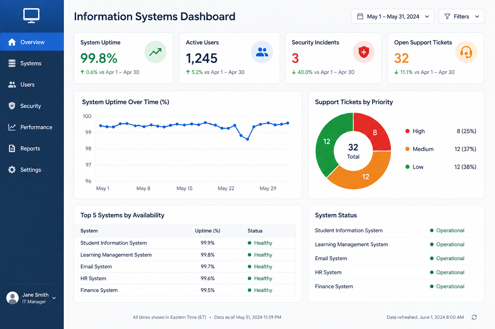
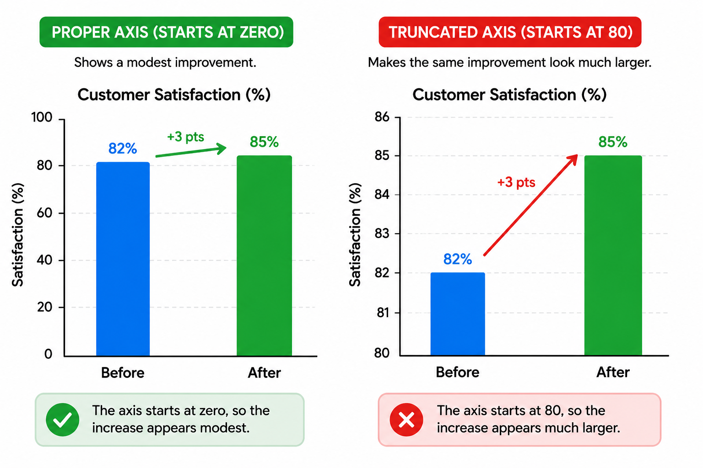
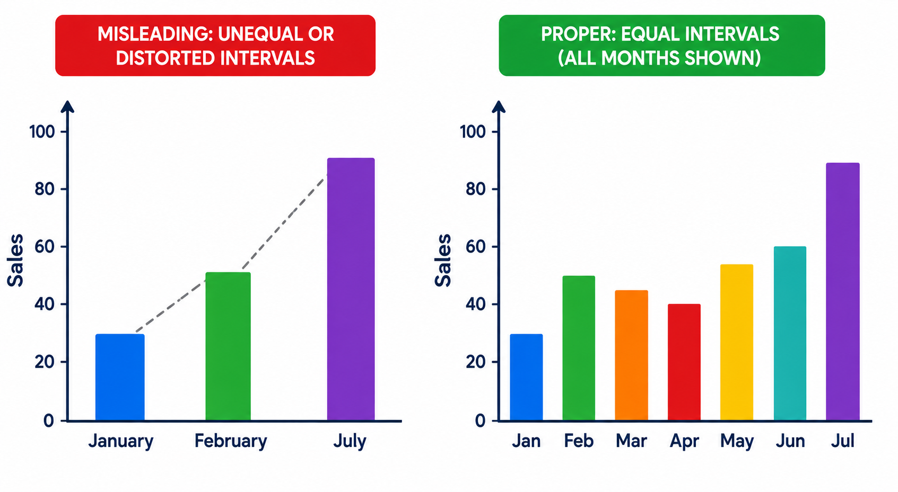
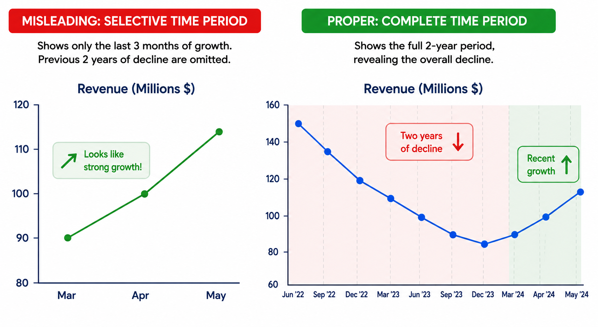
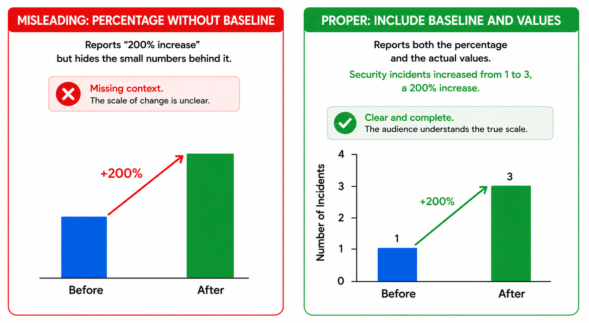
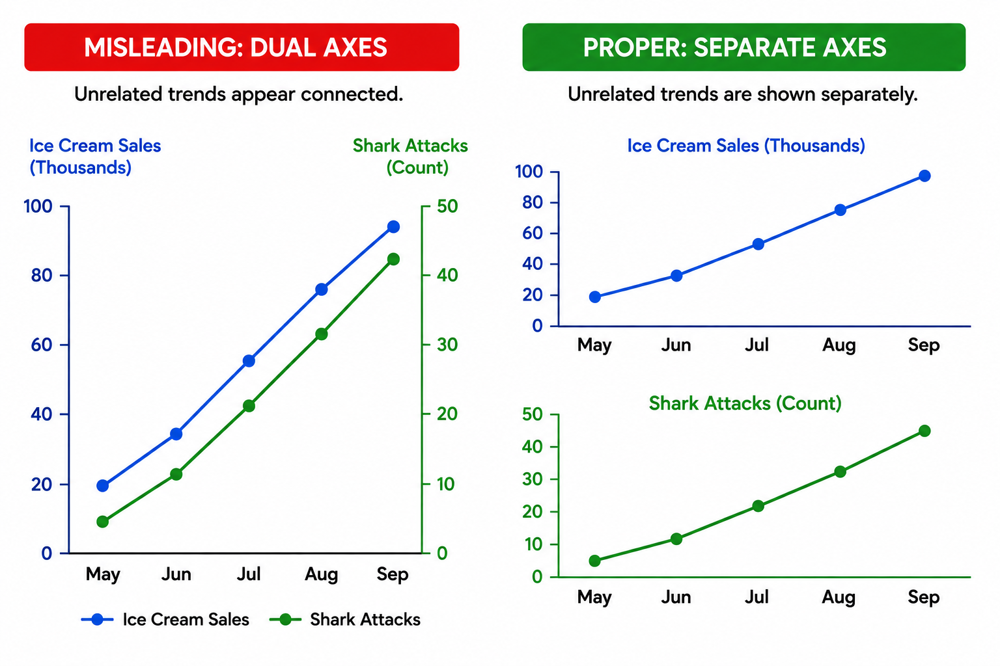

Effective Data Visualizations
Visual displays turn data into information people can understand and use. Patterns that are difficult to spot in a table often become obvious in a chart: trends, differences, relationships, outliers, bottlenecks, and risks that need attention. In an information systems setting, visuals also help connect technical data to organizational goals, translating system conditions into meaning that decision-makers can act on.
A good visual should do more than look polished. It should serve a clear purpose, whether decorative, explanatory, evidentiary, or analytical. The analyst should be able to explain what information shaped the visual, who verified it, what the audience should believe or do after seeing it, and how the organization can defend the way it was produced.
Comprehension Check 1 of 5
Visualization Principles
Strong visualizations begin with a few basic principles. Clarity keeps communication straightforward. Simplicity removes clutter and nonessential detail. Purposeful intent makes every element support a specific message or insight. Consistency keeps colors, fonts, and layout rules uniform across screens and reports.
When these principles are followed, the audience can focus on the data rather than on the design. The goal is not to make the visual the most elaborate part of the page, but the most useful.
Comprehension Check 2 of 5
Foundations of Visual Perception and Design
Effective visuals also reflect how people naturally see and organize information. Visual hierarchy directs attention so the most important data stands out first. Gestalt principles help explain why people group nearby or similar elements together, which is why related items should be placed close to one another and enclosed together when they belong to the same data set.
Preattentive features such as position, size, and color can communicate meaning almost instantly, before the viewer consciously analyzes the chart. When these ideas are used well, the visual feels clear and intuitive because it matches the way people actually perceive information.
Choosing and Designing Effective Visuals
The best chart is the one that fits the data and the purpose. Be aware that the chart choice depends on the analytical question, not simply on the type of chart. Line charts are useful for trends over time. Bar charts compare categories. Stacked bar charts show how a total is divided. Scatterplots reveal relationships between two variables. Maps show geographic patterns. Tables are best when exact values matter. Heat maps work well for concentration, intensity, or risk. Funnel charts show stages in a process, and process diagrams illustrate how information or work moves through a system.
Color should support the message rather than distract from it. It is most effective when it highlights key metrics, categories, or exceptions. Color meanings should remain consistent across visuals, and unnecessary borders, gridlines, decorative icons, and 3D effects should be removed when they do not help the reader. Accessibility matters as well: text should be readable, contrast should be high, palettes should work for colorblind viewers, and meaning should never depend on color alone.
Comprehension Check 3 of 5
Dashboard Design
A dashboard is a visual summary of the organization’s most important data. It brings charts and other visual tools together so leaders can see performance, compare results with targets, and notice deviations before they become larger problems. Well-designed dashboards provide current, reliable, clearly defined data, and they often allow the user to drill down into supporting details when more context is needed.
Dashboards usually serve one of three purposes. Operational dashboards monitor live environments and highlight immediate exceptions, alerts, and risks. Analytical dashboards focus on historical data to reveal trends, progress, and changes over weeks, months, or years. Strategic or executive dashboards summarize key performance indicators so leaders can assess organizational health and progress toward major goals.

Comprehension Check 4 of 5
Misleading Visuals
A visual is part of a decision-support system, not just a picture on a screen. If the chart distorts the evidence, it can lead to poor decisions even when the underlying data is accurate. Good design cannot rescue bad data, and a polished chart can give unreliable data an appearance of authority. For that reason, visual quality must always be paired with data quality.
Common misleading visuals include truncated axes, unequal or distorted intervals, inappropriate chart types, misleading colors, selective time periods, misleading averages and totals, percentages without a baseline, correlation presented as causation, and cherry-picked data. Each of these can make ordinary differences look dramatic, hide variation inside a summary measure, or support a conclusion that the evidence does not truly justify.





Comprehension Check 5 of 5
Misleading Dashboards
Dashboards can also mislead when they give too much attention to low-priority measures or hide important ones. A weak dashboard may include too many metrics, give equal emphasis to items of very different importance, rely on outdated data without labeling it, bury unfavorable results behind filters, or make critical information difficult to reach. Dashboards should also avoid combining measures that use different definitions, because users may assume they are comparing like with like when they are not.
A strong dashboard makes priorities visible at a glance and supports quick, informed action.
Why This Matters
Effective visualization helps people see what matters quickly and clearly. When charts and dashboards are designed with purpose, clarity, and honesty, they turn technical data into organizational insight. When they are not, they can mislead the audience even if the numbers themselves are correct. The skill is not simply making visuals; it is making visuals that the organization can trust.
AI-Augmented Business Intelligence
Business intelligence systems organize data into reports, dashboards, metrics, and visualizations that support organizational decision-making. AI-augmented BI tools may recommend charts, generate summaries, identify trends, create calculated measures, or allow users to ask questions in natural language. These features can reduce the time required to explore data and build an initial report. They do not eliminate the need to understand aggregation, filtering, grouping, denominators, visual encoding, and the meaning of the measures being displayed.
Before an AI-generated dashboard or report is published, it should be reviewed like any other analytical product. Professionals should check whether the correct data source was used, whether calculations are accurate, whether filters are visible, whether scales are misleading, and whether the wording implies causation without evidence. They should also consider accessibility and whether the audience can interpret the display correctly. A polished dashboard is not necessarily a trustworthy dashboard; trust depends on accurate data, transparent logic, and appropriate human review.
Chapter Completion
Answer all five comprehension questions, then check your work.
Chapter complete
Copy or write down this access code. You will need it later in class to receive your points.
visual-trust